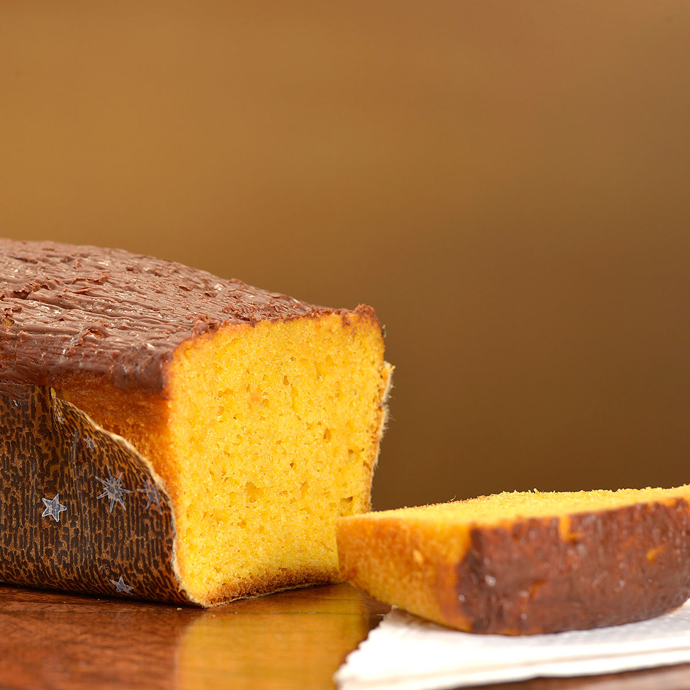

Bolo de Cenoura

Traditional Brazilian carrot cake.
Despite its unsettled origin, the Bolo de Cenoura is a delicious dessert
found in every corner of Brazil. Usually served with chocolate frosting,
but it is not necessary.
Ingredients
- 3 medium carrots
- 1 cup vegetable oil
- 4 eggs
- 1 1/2 cup sugar
- 2 cups wheat flour
- 1 spoon baking powder
- 5 spoons of warm water
Steps
- Peeled and chop the carrots
- Add to a blender the carrots, eggs, oil and sugar
- In a separate bowl sieve the flour and baking powder
- Add the wet and dry mixes together
- Mix them until it gets well combined
- Add the warm water slowly in the mix
- Put the mixture in a medium baking tray
- In a pre heated oven at 200C, cook for 25 minutes
back to Home